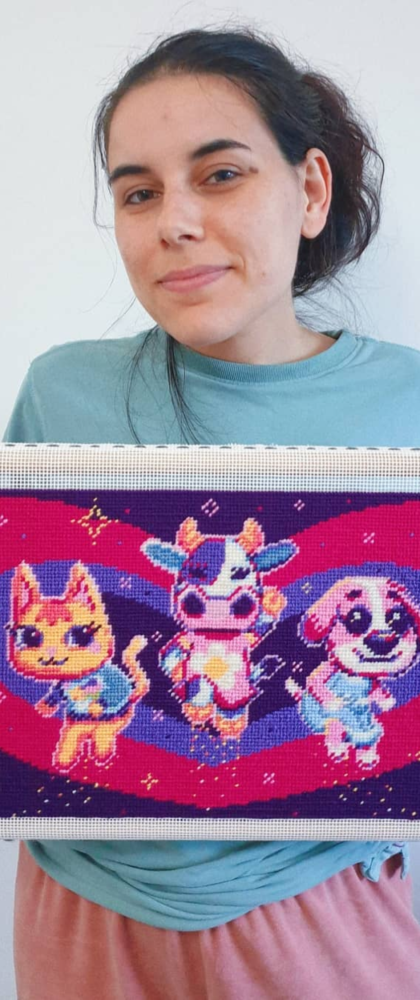
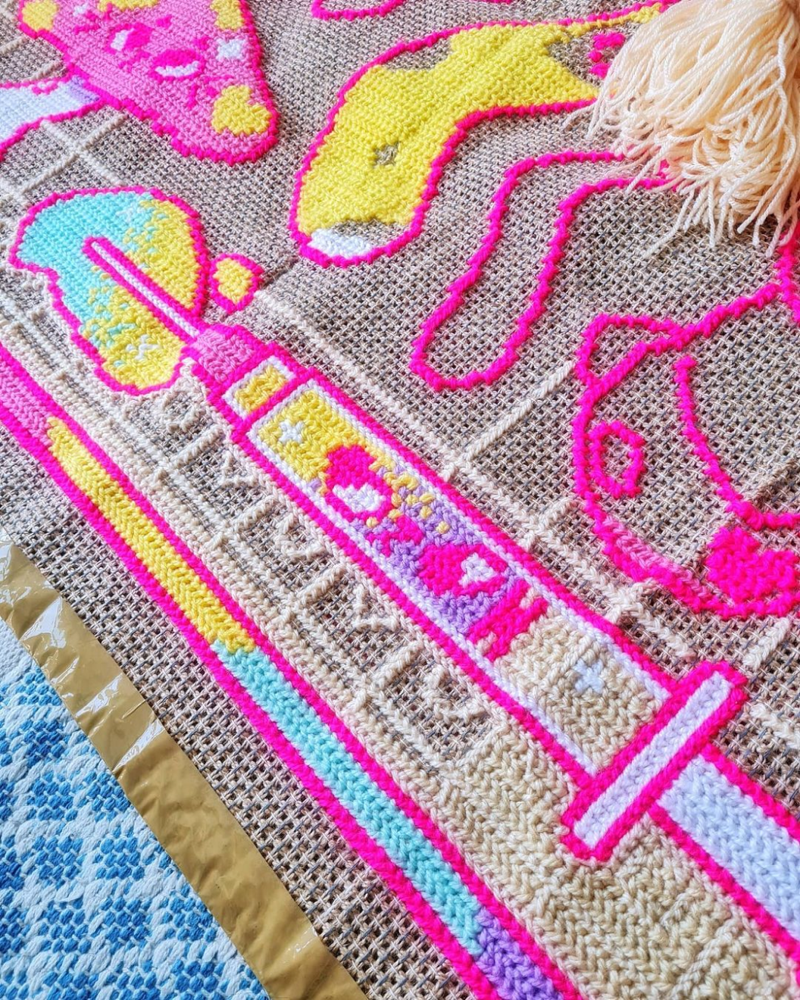
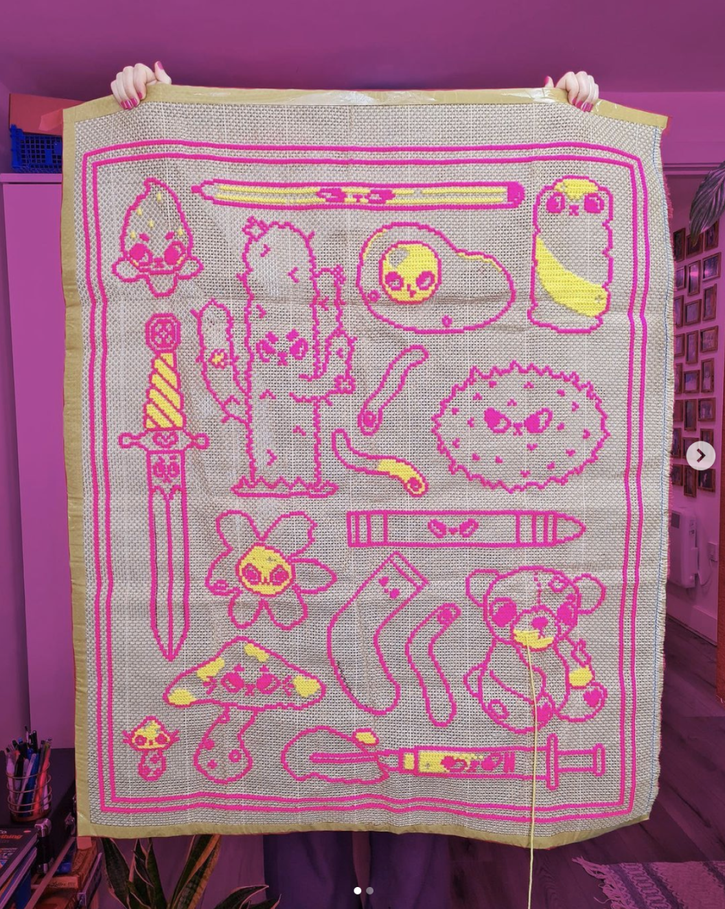

I'm a junior designer who's passionate about breathing life into web projects
Dress Local
Besides design, I love illustrating patterns for tapestry and all other fiber arts affairs.
About me



I’m a dog lover without a dog. My husband says that if I get a better job we can adopt one, so help me out.
First time I heard about design was throught my art teacher at college, when I asked him what career should I pursue, he said don’t go for art go for design. I’m glad I took his advice and enrolled into Graphic and Multimedia Design. Since then I fell in love with design, it has taught me to look at life throught a lense of beauty and meaning.
Everyday I’m motivated by the opportunity to solve real problems for people and to play around designing for personal projects like my fiber arts small business, @studiopaca.
Experience
Housekeeping Supervisor
2016-Current
Pattern designer at Studio Paca
2019-2021
Bachelor in Graphic and Multimedia Design at ESAD, Portugal
2011-2014
Courses
Coders Guild - Web development
2021 / Html, CSS and Java Script course
Plan, Design + Code Your First Website
2021 / Superhi
Responsive Web Design Certification
2021 / freeCodeCamp